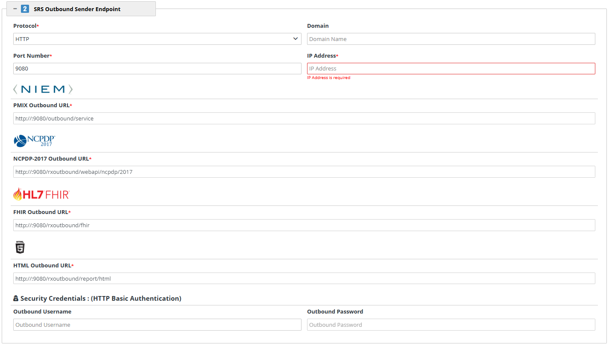

SRS Outbound Sender Endpoint
This section enlists the standards and interfaces that are supported by the RxCheck application for all request and response transactions. This step allows State PDMP Administrators to select/enter specific details pertaining to their unique PDMP site environment.
Currently, RxConsole supports the following interfaces:
- PMIX/NIEM – National Information Exchange Model
- NCPDP 2017 – National Council for Prescription Drug Programs
- HL7 FHIR – Health Level Seven International (HL7) Fast Healthcare Interoperability Resources (FHIR)
- HTML5 – Hypertext Markup Language 5
A brief description of each type of interface is listed below:
- PMIX: The PMIX Standards Organization supports the sharing of Prescription Drug Monitoring (PDMP) program Data among PDMP organizations and their stakeholders by establishing and maintaining the PMIX National Architecture and related guidelines, policies and standards to minimize the cost and complexity of sharing PDMP data across organizational, vendor, geographic and operational boundaries; enable secure, trusted exchanges of PDMP data and promote consistency among PDMPs.
- NIEM: NIEM is an XML information exchange standard which specifies the foundation and building blocks for interoperable information exchange by serving as a common XML vocabulary, integrated with established information exchange standards and processes, to support cross-domain information sharing and efficient information exchange between inter-related public and private service domains (e.g., law enforcement, public safety, healthcare, etc.). NIEM enables agencies to share information that crosses system, agency, and jurisdictional borders. NIEM improves decision-making, agility, and efficiency in satisfying business needs. NIEM supports interoperability and reuse, reducing costs.
- NCPDP: NCPDP is a not-for-profit, multi-stakeholder forum for developing and promoting industry standards and business solutions that improve patient safety and health outcomes, while also decreasing costs. NCPDP uses a consensus-building process to create national standards for real-time, electronic exchange of healthcare information. Their primary focus is on information exchange for prescribing, dispensing, monitoring, managing, and paying for medications and pharmacy services crucial to quality healthcare.
- HL7/FHIR: HL7 are a set of international standards used to transfer and share data between various healthcare providers. It supports clinical practice and the management, delivery, and evaluation of health services by providing a framework (and related standards) for the information exchange, system integration, data sharing, and retrieval of electronic health information. HL7 helps bridge the gap between health IT applications and makes sharing healthcare data easier and more efficient when compared to older methods.
- HTML5: It supports the rendering of information received by the user into an understandable & readable format by displaying the data on a user interface.
To configure the SRS Outbound Sender Endpoint section, the State PDMP Administrator must enter the requested information into the active data fields that fall under this section. All URL Paths and Outbound URLs for each interface are auto populated. Should there be any questions or concerns, please contact the RxCheck technical team for further assistance.
The following Screenshot depicts the configuration process for the SRS Outbound Sender Endpoint section. For additional clarity, the ensuing table provides a definition of each data field present in the screenshot.

| Heading | Data Field Name | Description |
|---|
| Protocol | Protocols define a standardized set of rules for formatting and handling data during transmission. State PDMP Administrators must select one of the following options from the dropdown menu: - HTTP (HyperText Transfer Protocol) – A basic protocol used for transmitting text-based data between a client (e.g. browser) and a server. HTTP does not provide encryption, making it less secure for transmitting sensitive information.
- HTTPS (HyperText Transfer Protocol Secure) – An enhanced version of HTTP that uses encryption and authentication mechanisms. HTTPS ensure secure communication be leveraging Secure Socket Layer (SSL) or Transport Layer Security (TLS), and is the recommended protocol for transmitting PDMP data within the RxCheck infrastructure.
|
| Domain | The domain name of the server on which the SRS is running. This field is optional – If no domain is specified the system will use the IP Address. E.g. New Jersey: NJ.gov |
| Port Number | A port is a communication endpoint, and a port number is a logical number assigned to it. The port number indicates the dedicated port that will be used by the SRS software for communication purposes. Port numbers are used to direct incoming network traffic to the appropriate process or service on a server, ensuring that messages reach the correct application for handling. |
| IP Address | An Internet Protocol (IP) Address is a unique numerical identifier assigned to each device that is connected to a network that uses the Internet Protocol for communication. The IP Address field is populated as "localhost" by default. |
| Heading | Data Field Name | Description |
| NIEM | PMIX Outbound URL | A fully qualified URL for the NIEM Service on Outbound SRS. This field is auto-populated. |
| NCPDP-2017 | NCPDP-2017 Outbound URL | A fully qualified URL for the NCPDP 2017 Service on Outbound SRS. This field is auto-populated. |
| HL7 FHIR | FHIR Outbound URL | A fully qualified URL for the FHIR Service on Outbound SRS. This field is auto-populated. |
| HTML | HTML Outbound URL | A fully qualified URL for the HTML Service on Outbound SRS. This field is auto-populated. |
| Security Credentials: (HTTP Basic Authentication) | Outbound Username | A username to authenticate the SRS connection on the RxCheck network. |
| Outbound Password | A password to authenticate the SRS connection on the RxCheck network. |